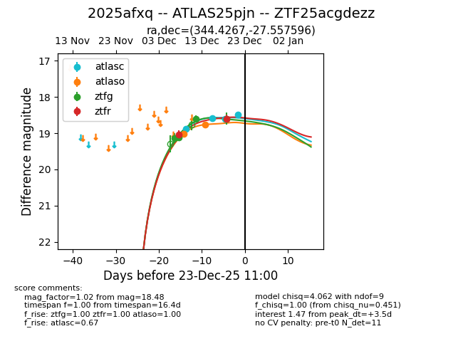
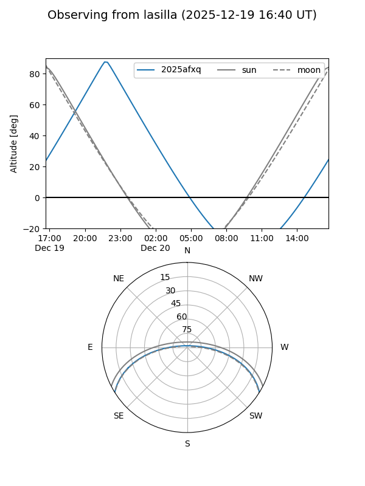
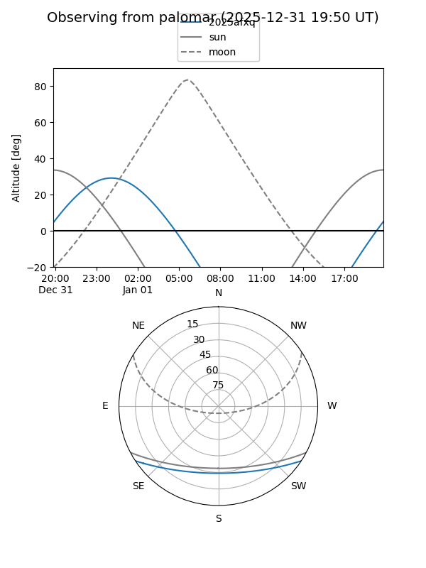
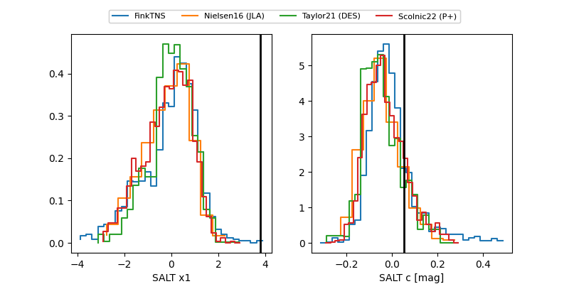

2025afxq
Target 2025afxq at 2025-12-27 16:17
Aliases and brokers:
FINK: fink-portal.org/ZTF25acgdezz
Lasair: lasair-ztf.lsst.ac.uk/objects/ZTF25acgdezz
ALeRCE: alerce.online/object/ZTF25acgdezz
TNS: wis-tns.org/object/2025afxq
YSE: ziggy.ucolick.org/yse/transient_detail/2025afxq
alt names
ZTF25acgdezz (ztf,fink_ztf)
2025afxq (tns,yse)
ATLAS25pjn (atlas)
Coordinates:
equatorial (ra, dec) = 344.4267,-27.55760
equatorial (HMS+DMS) = 22:57:42.40,-27:33:27.34
galactic (l, b) = (25.3407,-64.79605)
Flags:
Photometry:
last atlasc=18.52, atlaso=18.76, ztfg=18.60, ztfr=18.60
4 atlasc, 2 atlaso, 4 ztfg, 2 ztfr detections
Lightcurve

Visibility


Additional plots
